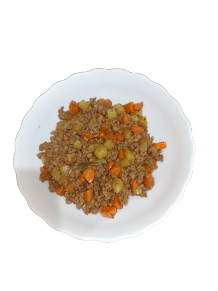

Giniling is the Tagalog term for "ground meat". It is a stew traditionally made of ground pork and veggies such as carrots, potatoes, bell pepper, and green peas. These are simmered in tomato or soy sauce until the flavors seep out and blend together to make a flavorsome dish.This recipe is by Kuya Fern.
Ingredients:
- 1pc medium size potato chopped into cubes
- 1pc carrot chopped into cubes (optional)
- 1/2tbsp salt and ground black pepper
- 2pcs onions chopped
- 8cloves chopped garlic
- 750g ground pork
- 1/2tbsp salt and ground black pepper
- 2pcs Dried bay leaves
- 1tbsp soy sauce
- 2tbsp oyster sauce
- 3tbsp vinegar
- 2tbsp oyster sauce
- 3/4cup water to deglaze pan
Steps:
- Saute potato on high flame setting until lightly toasted.
- Add 1/2 tablespoon of salt and pepper. Do the same with carrots.
- Mix thoroughly and continue to saute until you see a bit of toast marks.
- Saute onions on high flame setting for about 20 seconds.
- Add garlic and continue to saute for another 10 seconds.
- Add 750 grams ground pork and continue to saute on high flame setting until you see change in color.
- Add ground black pepper.
- Mix thoroughly and continue to saute and let fat render.
- Add 1 tablespoon of soy sauce and 2 tablespoon of oyster sauce.
- Mix thoroughly and continue to saute until you see more fat coming out from the meat.
- Add 2 pieces of dried bay leaves and mix thoroughly.
- Add about 3/4 cup water just to deglaze the pan.
- Mix and make sure to get those toasted flavors on the pan.
- Add 3 tablespoon vinergar and set flame on low flame. Cook for about 5 minutes.
- Add about 3/4 cup water just to deglaze the pan.
- When water is reduced, mix to avoid burning.
- Add the sauteed potato and carrots.
- Set flame on high and mix thoroughly.